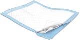
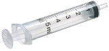
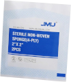
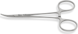
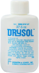

| Consent form |
 |
For explaining the procedure, risks, and benefits to the patient and getting their permission to proceed. |
| Timeout Sheet |
|
A checklist for doing timout. |
| Chucks pad |
 |
Put this under the patient's arm in case of bleeding. |
| Derm Marker |
 |
For marking the removal site. |
| Alcohol Prep Pads x 2 |
 |
For cleaning off any blood after the procedure. |
| Chloraprep |
 |
For cleaning the skin prior to cutting. |
| Lidocaine 1-2% with or without epinephrine (3 mL) |
 |
For numbing up the skin. With epinephrine is preferred. |
| 5 mL Syringe |
 |
For injecting lidocaine. |
| 18 gauge needle |
 |
For drawing up lidocaine into the syringe. Do not let the patient see this needle. |
| 25 to 27.5 gauge needle |
 |
A small and friendly needle for injecting lidocaine. |
| x3 Sterile Gauze, 2" x 2" |
 |
For bandaging the wound, holding pressure, and cleaning the wound. |
| Dermablade |
|
For cutting the skin sample. |
| Cotton-Tipped Swabs |
|
For manipulating the tissue into the formalin and applying the drysol. |
| Curved Hemostat |
 |
For grasping hold of the tissue sample. Not usually needed, so keep it in its package. |
| Formalin container |
|
A container for the skin sample. |
| Drysol |
 |
When applied to a superficial wound, stops the bleeding quickly. Douse a couple swabs with this before cutting. |
| Vaseline |
|
Keeps the wound covered, moist. |
| Tegaderm |
 |
A flexible seal that keeps the gauze over the wound. Band-Aids are OK too in a pinch. |